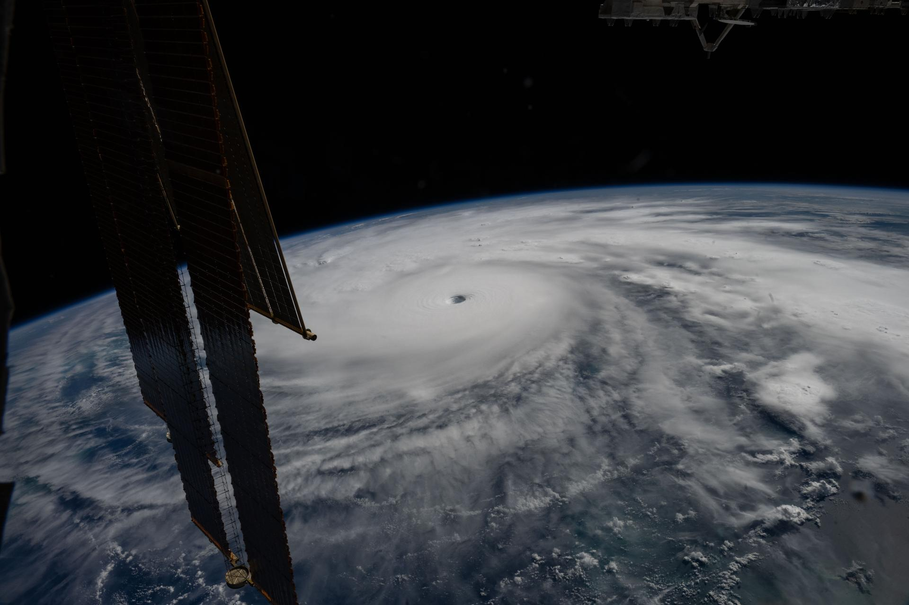

Galería Satelital y Climática
Registro visual de impacto regional y monitoreo atmosférico
Explora las capturas en alta resolución y el material fotográfico de referencia sobre las condiciones hídricas y ambientales de la zona.

Impacto regional y crecidas hídricas en la zona de influencia. Fotografía y composición de autoría propia.

Monitoreo satelital de condiciones atmosféricas y aerosoles. Imagen: NASA EOSDIS Worldview.

Vista panorámica de la atmósfera terrestre desde la Estación Espacial Internacional (ISS).
¿Deseas consultar otros apartados?
Vuelve al portal institucional de la asociación o revisa el pronóstico en tiempo real.